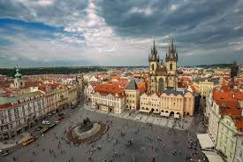
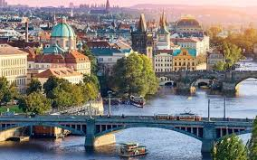

Come Relax
Night Life:Prague UNESCO-listed Kutna Hora, famous for its Sedlec Bone Chapel and other historical treasures, sits just east of Prague. This tour gets you there fast by train, and cuts the hassle of finding your own way around the sights once there. Plus, your guide provides background on the sights and Kutna’s history, and points you to a much-praised restaurant for lunch (own expense). Fares and entrance fees are included for added value. Meet your guide in central Prague and make the rail journey through Bohemia’s countryside to the UNESCO-protected town of Kutna Hora. On arrival, visit the Sedlec Ossuary—a haunting chapel decorated with more than 40,000 medieval human bones. View the strange adornments, including a bone-built chandelier, skull pyramids, and bone coats of arms as your guide explains the whys and wherefores. See Kutna’s historic mines as you uncover its silver mining heritage, and visit other must-sees, including St. Barbara’s Church, which is regarded as one of central Europe’s most stunning Gothic churches.
Day Tours:Visiting World War II’s Terezin camp from Prague by yourself risks only a fragmented understanding of the complex and what occurred here. Gain a comprehensive picture of the 1941–1945 camp, used by Nazi forces as a Jewish prisoners’ transit hub and ghetto, on this guided tour. Explore the entire complex, including the museum, dormitories, and cemetery with full commentary throughout, and with entrance fees and return transport included.Board a comfortable, air-conditioned coach in central Prague with your guide and travel to Terezin, an 18th-century military fortress used as a transit camp and Jewish ghetto by Nazi forces after their invasion of the Czech Republic in WWII. On arrival, take a narrated tour of the complex as your guide charts the terrible events that occurred here. Learn how many thousands died at the camp, and how many were transported on to death camps such as Auschwitz and Treblinka. Visit must-sees including the Small Fortress, Ghetto Museum, Magdeburg Barracks, Columbarium, Crematorium, and dormitories; the latter with original furniture. Learn about the prisoners’ suffering through documentary films, discovering how they maintained a semblance of cultural life despite everything. 

Guided Tours:The Bohemian Switzerland National Park boasts some of Europe’s best scenery, and sits just north of Prague. This day trip is easier than visiting independently with air-conditioned minivan transport, five walking options (depending on the season) to suit your preferences, and a small group for a personalized feel. Lunch and entrance fees are included, as well as equipment such as hiking sticks. The Bohemian Switzerland National Park boasts some of Europe’s best scenery, and sits just north of Prague. This day trip is easier than visiting independently with air-conditioned minivan transport, five walking options (depending on the season) to suit your preferences, and a small group for a personalized feel. Lunch and entrance fees are included, as well as equipment such as hiking sticks.The Bohemian Switzerland National Park boasts some of Europe’s best scenery, and sits just north of Prague. This day trip is easier than visiting independently with air-conditioned minivan transport, five walking options (depending on the season) to suit your preferences, and a small group for a personalized feel. Lunch and entrance fees are included, as well as equipment such as hiking sticks.
Enjoy a night out watching the best rated shows. You will laugh, cry, and many things in between.